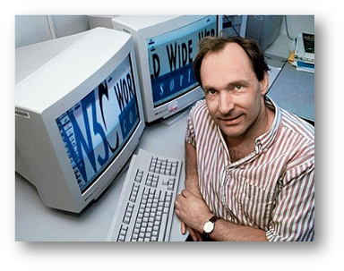
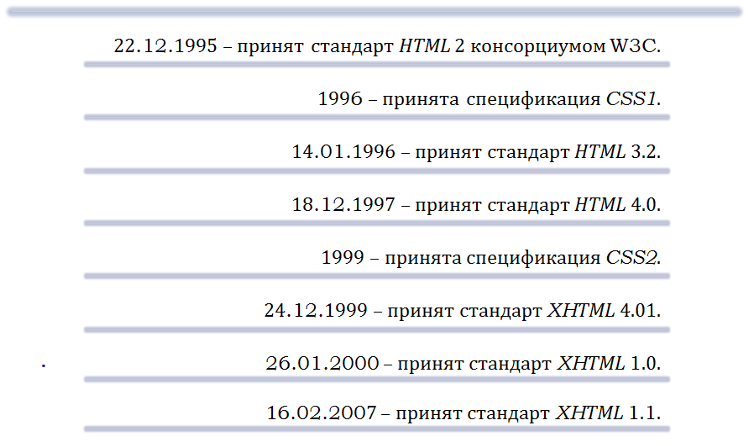

Развитие спецификации HTML
Язык HTML был разработан британским учёным Тимом Бернерсом-Ли приблизительно в 1986—1991 годах в стенах Европейского Центра ядерных исследований в Женеве (Швейцария). HTML создавался как язык для обмена научной и технической документацией, пригодный для использования людьми, не являющимися специалистами в области вёрстки.
Изначально язык HTML был задуман и создан как средство структурирования и форматирования документов без их привязки к средствам воспроизведения (отображения). В идеале, текст с разметкой HTML должен был без стилистических и структурных искажений воспроизводиться на оборудовании с различной технической оснащённостью (цветной экран современного компьютера, монохромный экран органайзера, ограниченный по размерам экран мобильного телефона или устройства и программы голосового воспроизведения текстов).
Однако современное применение HTML очень далеко от его изначальной задачи. С течением времени основная идея платформонезависимости языка HTML была принесена в жертву современным потребностям в мультимедийном и графическом оформлении.
Хронологическая таблица принятия стандартов и спецификаций.

Принятие стандарта HTML5
Рабочая группа по разработке Гипертекстовых Прикладных Технологий в Веб (WHATWG) начала работу над новым стандартом в 2004 году, когда World Wide Web Consortium (W3C) сосредоточился на будущих разработках XHTML 2.0, а HTML 4.01 не изменялся с 2000 года.
В 2009 году W3C признал, что срок работы у рабочей группы XHTML 2.0 истек, и решил не возобновлять его.
В настоящий момент W3C и WHATWG работают вместе над разработкой HTML5, конец разработки которого запланирован на 2014 г.